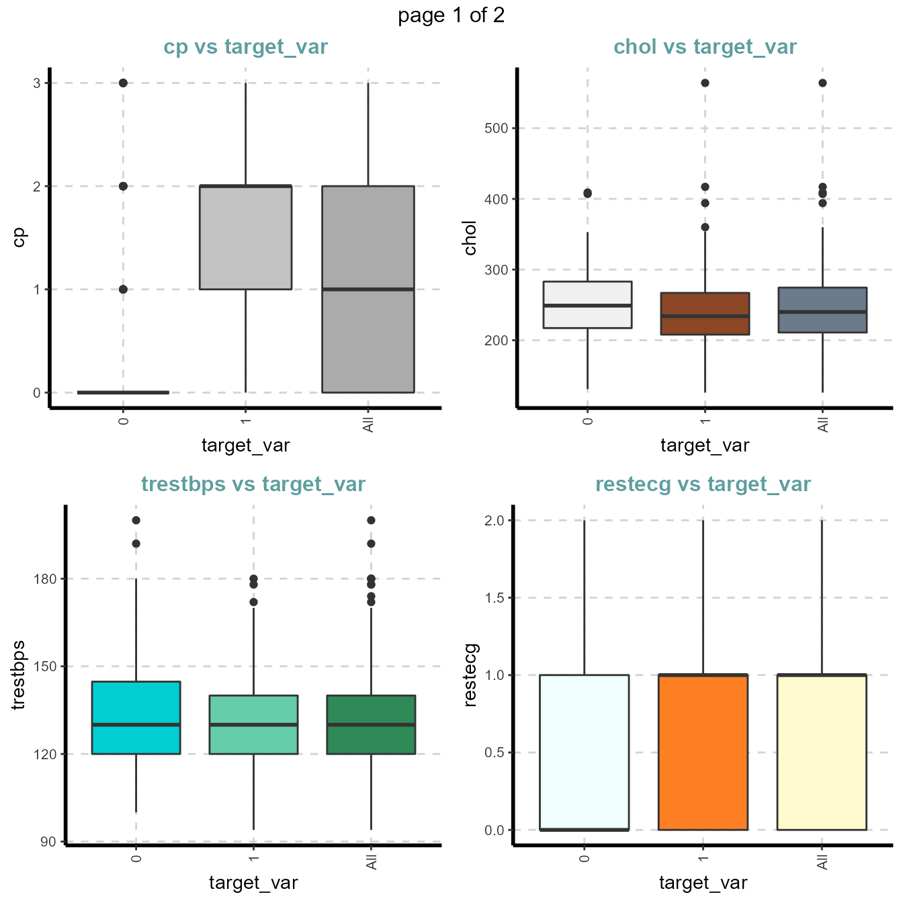
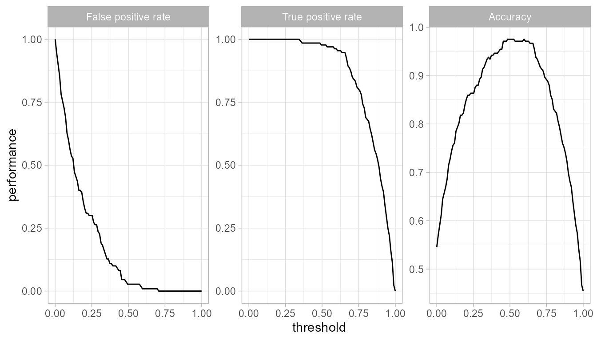

DriveML.RmdThe document introduces the DriveML package and how it can help you to build effortless machine learning binary classification models in a short period.
DriveML is a series of functions such as AutoDataPrep, AutoMAR, autoMLmodel. DriveML automates some of the complicated machine learning functions such as exploratory data analysis, data pre-processing, feature engineering, model training, model validation, model tuning and model selection.
This package automates the following steps on any input dataset for machine learning classification problems
Additionally, we are providing a function SmartEDA for Exploratory data analysis that generates automated EDA report in HTML format to understand the distributions of the data. Please note there are some dependencies on some other R pacakges such as MLR, caret, data.table, ggplot2, etc. for some specific task.
To summarize, DriveML package helps in getting the complete Machine learning classification model just by running the function instead of writing lengthy r code.
Algorithm: Missing at random features
The DriveML R package has three unique functionalities as
autoDataPrep function to generate a novel features based on the functional understanding of the datasetautoMLmodel function to develope baseline machine learning models using regression and tree based classfication techniquesautoMLReport function to print the machine learning model outcome in HTML formatThis database contains 76 attributes, but all published experiments refer to using a subset of 14 of them. In particular, the Cleveland database is the only one that has been used by ML researchers to this date. The “goal” field refers to the presence of heart disease in the patient. It is integer valued from 0 (no presence) to 4.
Data Source https://archive.ics.uci.edu/ml/datasets/Heart+Disease
Install the package “DriveML” to get the example data set.
library("DriveML")
library("SmartEDA")
## Load sample dataset from ISLR pacakge
heart = DriveML::heartmore detailed attribute information is there in DriveML help page
For data exploratory analysis used SmartEDA package
Understanding the dimensions of the dataset, variable names, overall missing summary and data types of each variables
# Overview of the data - Type = 1
ExpData(data=heart,type=1)
# Structure of the data - Type = 2
ExpData(data=heart,type=2)| Descriptions | Value |
|---|---|
| Sample size (nrow) | 303 |
| No. of variables (ncol) | 14 |
| No. of numeric/interger variables | 14 |
| No. of factor variables | 0 |
| No. of text variables | 0 |
| No. of logical variables | 0 |
| No. of identifier variables | 0 |
| No. of date variables | 0 |
| No. of zero variance variables (uniform) | 0 |
| %. of variables having complete cases | 100% (14) |
| %. of variables having >0% and <50% missing cases | 0% (0) |
| %. of variables having >=50% and <90% missing cases | 0% (0) |
| %. of variables having >=90% missing cases | 0% (0) |
| Index | Variable_Name | Variable_Type | Per_of_Missing | No_of_distinct_values |
|---|---|---|---|---|
| 1 | age | integer | 0 | 41 |
| 2 | sex | integer | 0 | 2 |
| 3 | cp | integer | 0 | 4 |
| 4 | trestbps | integer | 0 | 49 |
| 5 | chol | integer | 0 | 152 |
| 6 | fbs | integer | 0 | 2 |
| 7 | restecg | integer | 0 | 3 |
| 8 | thalach | integer | 0 | 91 |
| 9 | exang | integer | 0 | 2 |
| 10 | oldpeak | numeric | 0 | 40 |
| 11 | slope | integer | 0 | 3 |
| 12 | ca | integer | 0 | 5 |
| 13 | thal | integer | 0 | 4 |
| 14 | target_var | integer | 0 | 2 |
Box plots for all numerical variables vs categorical dependent variable - Bivariate comparison only with classes
Boxplot for all the numerical attributes by each class of the target variable
plot4 <- ExpNumViz(heart,target="target_var",type=1,nlim=3,fname=NULL,Page=c(2,2),sample=8)
plot4[[1]]
Cross tabulation with target_var variable
Custom tables between all categorical independent variables and the target variable
| VARIABLE | CATEGORY | target_var:0 | target_var:1 | TOTAL |
|---|---|---|---|---|
| sex | 0 | 24 | 72 | 96 |
| sex | 1 | 114 | 93 | 207 |
| sex | TOTAL | 138 | 165 | 303 |
| fbs | 0 | 116 | 142 | 258 |
| fbs | 1 | 22 | 23 | 45 |
| fbs | TOTAL | 138 | 165 | 303 |
| restecg | 0 | 79 | 68 | 147 |
| restecg | 1 | 56 | 96 | 152 |
| restecg | 2 | 3 | 1 | 4 |
| restecg | TOTAL | 138 | 165 | 303 |
| exang | 0 | 62 | 142 | 204 |
| exang | 1 | 76 | 23 | 99 |
| exang | TOTAL | 138 | 165 | 303 |
| slope | 0 | 12 | 9 | 21 |
| slope | 1 | 91 | 49 | 140 |
| slope | 2 | 35 | 107 | 142 |
| slope | TOTAL | 138 | 165 | 303 |
| target_var | 0 | 138 | 0 | 138 |
| target_var | 1 | 0 | 165 | 165 |
| target_var | TOTAL | 138 | 165 | 303 |
Stacked bar plot with vertical or horizontal bars for all categorical variables
ExpOutliers(heart, varlist = c("oldpeak","trestbps","chol"), method = "boxplot", treatment = "mean", capping = c(0.1, 0.9))| Category | oldpeak | trestbps | chol |
|---|---|---|---|
| Lower cap : 0.1 | 0 | 110 | 188 |
| Upper cap : 0.9 | 2.8 | 152 | 308.8 |
| Lower bound | -2.4 | 90 | 115.75 |
| Upper bound | 4 | 170 | 369.75 |
| Num of outliers | 5 | 9 | 5 |
| Lower outlier case | |||
| Upper outlier case | 102,205,222,251,292 | 9,102,111,204,224,242,249,261,267 | 29,86,97,221,247 |
| Mean before | 1.04 | 131.62 | 246.26 |
| Mean after | 0.97 | 130.1 | 243.04 |
| Median before | 0.8 | 130 | 240 |
| Median after | 0.65 | 130 | 240 |
autoDataprep
dateprep <- autoDataprep(data = heart,
target = 'target_var',
missimpute = 'default',
auto_mar = FALSE,
mar_object = NULL,
dummyvar = TRUE,
char_var_limit = 15,
aucv = 0.002,
corr = 0.98,
outlier_flag = TRUE,
uid = NULL,
onlykeep = NULL,
drop = NULL)
print(dateprep)## Data preparation result
## Call:
## autoDataprep(data = heart, target = "target_var", missimpute = "default", auto_mar = FALSE, mar_object = NULL, dummyvar = TRUE, char_var_limit = 15, aucv = 0.002, corr = 0.98, outlier_flag = TRUE, uid = NULL, onlykeep = NULL, drop = NULL)
##
## *** Data preparation summary ***
## Total no. of columns available in the data set: 14
## No. of numeric columns: 8
## No. of factor / character columns: 0
## No. of date columns: 0
## No. of logical columns: 0
## No. of unique columns: 0
## No. of MAR columns: 0
## No. of dummy variables created: 0
##
## *** Variable reduction ***
## Step 1 - Checked and removed useless variables: 6
## Step 2 - No. of variables before fetature reduction: 22
## Step 3 - No. of zero variance columns (Constant): 0
## Step 4 - No. of high correlated or bijection columns: 3
## Step 5 - No. of low AUC valued columns: 2
## *Final number of columns considered for ML model: 17
##
## *** Data preparation highlights ***
## Missing replaced with {
## --> factor = imputeMode()
## --> integer = imputeMean()
## --> numeric = imputeMedian()
## --> character = imputeMode() }autoMLmodel
Automated training, tuning and validation of machine learning models. This function includes the following binary classification techniques
Model performance
| Model | Fitting time | Scoring time | Train AUC | Test AUC | Accuracy | Precision | Recall | F1_score |
|---|---|---|---|---|---|---|---|---|
| glmnet | 30.693 secs | 0.009 secs | 0.928 | 0.908 | 0.820 | 0.824 | 0.848 | 0.836 |
| logreg | 26.682 secs | 0.005 secs | 0.929 | 0.906 | 0.820 | 0.824 | 0.848 | 0.836 |
| randomForest | 28.789 secs | 0.008 secs | 0.999 | 0.895 | 0.803 | 0.784 | 0.879 | 0.829 |
| ranger | 30.068 secs | 0.044 secs | 0.999 | 0.918 | 0.803 | 0.784 | 0.879 | 0.829 |
| xgboost | 29.706 secs | 0.005 secs | 0.960 | 0.933 | 0.820 | 0.806 | 0.879 | 0.841 |
| rpart | 28.494 secs | 0.006 secs | 0.932 | 0.857 | 0.803 | 0.818 | 0.818 | 0.818 |
Randomforest model Receiver Operating Characteristic (ROC) and the variable Importance
Training dataset ROC
Test dataset ROC
Variable importance
## [[1]]Threshold
